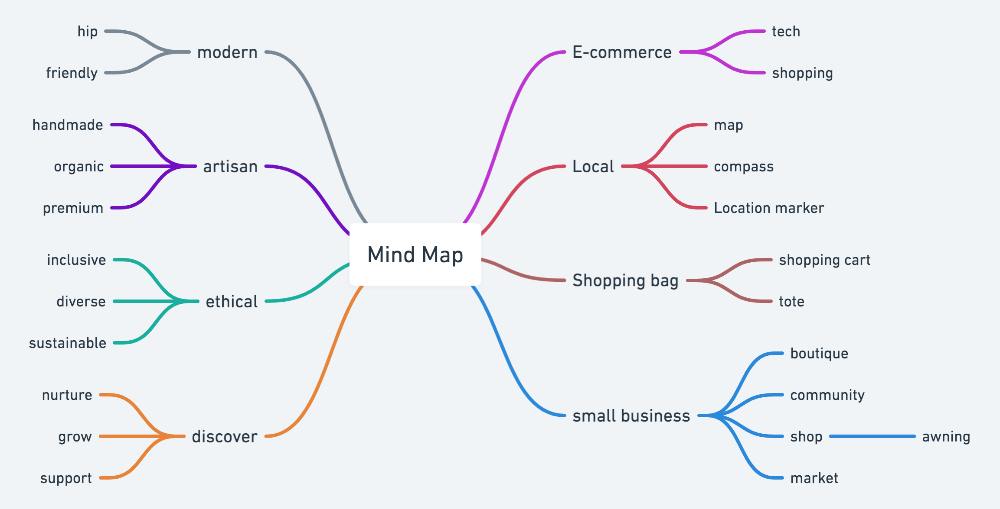
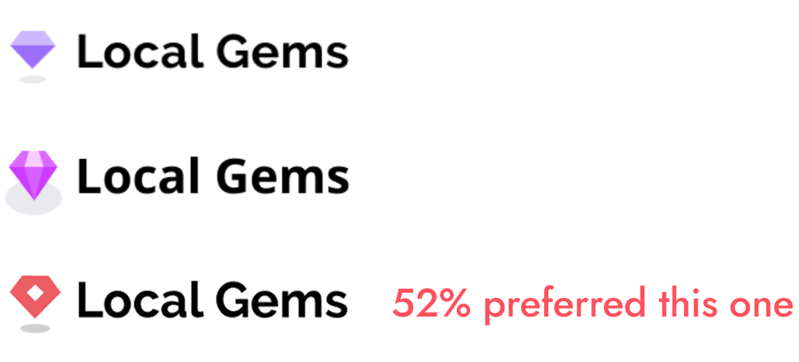

Local Gems is an e-commerce platform that makes it easy to shop local and support small businesses near you.
Overview
Role
UX Research, UX Design,
Information architecture,
Visual design and testing
Deliverables
High fidelity Invision prototype,
competitive analysis, user
personas, user stories, user flows, logo, brand style guide, UI design
Tools used
Figma, Invision,
Google Forms, Illustrator,
Draw.io, Lookback.io, UsabilityHub
Problem
Through our research we discovered our users wanted to shop local and support small businesses more often. Common barriers for them were the convenience of online shopping and the difficulty of discovering products locally. Other concerns were shopping safely in person during a pandemic, which is making them shop online even more.
Solution
To address these problems we created a customer-facing e-commerce platform, (with a focus on the desktop experience) where customers can shop locally at small businesses online, browse in-stock items, order items for pickup or delivery and discover shops near them.

Research and Discovery
Research Key Insights
I created a survey to discover user habits, pain points and needs when it comes to shopping local. We came away with several key findings:
54%
make most of their online purchases on desktop vs mobile devices
75%
said they would be interested in ordering items for pickup from local businesses
51%
of retail purchases are made online vs in- person (not including groceries)
58.6%
of survey respondents rarely shop at local small retailers but want to more often
Pain Points:
What are the main reasons users don’t shop local more often?
59% Hard to know what’s in stock
54% It’s too expensive
47% It’s inconvenient
Motivations:
What are the top reasons users like to shop local?
75% Supporting small businesses
85% Seeing merchandise in person
37% A more unique selection of items
Features:
What features would tempt users to shop local more often
91% Seeing what items are in-stock
87% Ordering items for delivery and pickup
85% Detailed info about each product
User Survey Analysis
Based on the findings I made these conclusions. I needed to create an app like this because xyz Based on the findings I made these conclusions. I needed to create an app like this because xyz Based on the findings I made these conclusions. I needed to create an app like this because xyz
User Interviews
I interviewed several users remotely and asked them to record themselves in their kitchens deciding what to eat. Ect, ect ect.
Competitive Analysis
To find an opportunity for an e-commerce platform to compete in the marketplace, I conducted a competitive analysis on four e-commerce apps: Amazon, Etsy and Google Shopping. I chose these apps because our research revealed these were the shopping apps used most often by our respondents.
Strengths:
E-commerce behemoth
Weaknesses:
Has a shop local option but it includes options in a large area of your state, not options for shopping local in your city
Strengths:
Dominates e-commerce search engine traffic
Weaknesses:
Weaknesses: Has a shop local option but it includes options in a large area of your state, not options for shopping local in your city

Strengths:
Supports independent makers/individuals, has unique items
Weaknesseses:
It doesn’t promote shopping local and it’s hard to find local sellers, you have to type in your zip code
Findings
Some do allow users to shop locally, but none of them are featuring truly independent retailers, just big box stores or individual sellers. There’s also an opportunity for small independent retailers to complete in this climate where even large e-commerce platforms aren’t as reliable because of the disruption to their supply chains during this pandemic.
User Personas
Next, I developed three distinct personas based on trends in the research to build empathy with users:

Audrey
Goals: Prefers shopping local to online. She wants to check which items are in stock so she can shop local in-person at her favorite shops
Frustrations: “It’s hard to know what items are in stock nearby - I’m also concerned about COVID and will be shopping in person less”

Mariah
Goals: Get the best deal possible on items when shopping online. She likes shopping local in person but needs items for pickup and delivery options
Frustrations: “There aren’t many cool independent retailers near me and shopping in person is a hassle”

Alex
Goals: Wants shopping local to be as convenient as Amazon, would only shop local if they had delivery options
Frustrations: “I rarely shop local because it’s inconvenient and too expensive”
Information Architecture
User Flows
I mapped out the user stories with user flows to inform the design.

Site Map
I created a site map based on the user flows

Sketching and wireframing
We then sketched out wireframes for each screen needed to complete the tasks in the user stories and flows. Since our research revealed that our users like shopping local, we wanted to make sure promote that mission on the landing page and give search engine traffic a way to search categories of products. Since users wanted to see which items were in stock and order for pickup or delivery, we made sure to include that as a filter on the category pages as well.
Homepage wireframes
Category page wireframes

Visual Design
Branding exploration and discovery
To kick start this process, we created a moodboard of the kinds of shops we wanted to support on our platform to help us mind-map and list-make the brand characteristics we wanted our platform to convey. We used this list to decide on the brand name Local Gems, a common phrase to describe small businesses, and one that would tell new users what our platform is about: shopping locally for quality products at small businesses online. Brand characteristics are friendly, fun, premium, hip, handmade, locally made, artisan, artsy crafty, slick, modern, warm, diverse, and inclusive.


Logo Development
I decided on the name Local Gems and created dozens of sketches to convey this concept
Logo Development
I refined the most promising sketches in Illustrator and came up with 3 options. To find out which was the strongest I ran a preference test with 15 people. The red mark emerged as the clear winner.

The Final Logo
The final logo mark combines the concepts of a location marker and gem, and uses the typeface Raleway for it's modern, friendly and slightly quirky look. The mark itself is versatile and can be used as a location marker ona map to indicate which local shops the platform will be partnered with.
Style guide and brand assets
We used a mood board to develop a brand color palette and style guide:


User testing high fidelity prototypes
- Created high fidelity prototypes with new brand assets in Figma and Invision
- User tested the high fidelity prototype and tested the desktop version on 3 users to complete these tasks:
- Browse for and filter different categories of products
- Search for an item
- Order an item for delivery
- Order an item for pickup
Users were able to understand what the app was about and complete the tasks of browsing through categories and purchasing items for delivery. There was a little confusion about which items were available for pickup vs delivery on the product details page, so I improved the design like this: I also preference tested the new set of icons
Before

After

These are the changes I made to the checkout confirmation screen
Before
After

Further testing and refinements/Adding a new map feature
I also received feedback from all users that they’d like to see the stores on a map to see how close they are to them and that they were interested in learning more about each shop. To help users achieve these goals, I went back to the drawing board and created a map feature on the homepage which would show the shops nearby on a map and link to a corresponding landing page for each shop which would showcase their products and tell users more about each shop:

I also received feedback from all users that they’d like to see the stores on a map to see how close they are to them and that they were interested in learning more about each shop. To help users achieve these goals, I went back to the drawing board and created a map feature on the homepage which would show the shops nearby on a map and link to a corresponding landing page for each shop which would showcase their products and tell users more about each shop.:
Before

After

I also received feedback from all users that they’d like to see the stores on a map to see how close they are to them and that they were interested in learning more about each shop. To help users achieve these goals, I went back to the drawing board and created a map feature on the homepage which would show the shops nearby on a map and link to a corresponding landing page for each shop which would showcase their products and tell users more about each shop.:
Before

After

Final Prototype
After much testing and iteration I created the final prototype. We prioritized desktop browser screens This easy to use web app lets users shop local online and:
Check which items are in stock nearby
✓ Up to date inventory
✓ Local sales and deals

Order items for pickup or delivery
✓ Same-day contactless curbside pickup
✓ Flexible shipping options
Discover small businesses near you
Local Gems makes it easy for you to shop locally with the convenience of e-commerce. Our platform has partnered with thousands of independent retailers in 5000+ cities to bring small businesses online during this pandemic. Shopping locally supports your community, creates jobs in your local economy and is a more sustainable way to shop

Conclusion
Overall, we had a lot of success with a “product-first” approach to the design. Users are looking for products first, not shops, and discovering local businesses is a benefit that happens further down the funnel. I learned the important of including as much relevant information as possible throughout the purchasing experience, because our users are very savvy when it comes to online shopping and need to feel we’re trustworthy and that they have enough information to make a decision to purchase. For example, I thought it would be enough to show that products were within 5 miles in their city of choice, but user feedback highlighted the importance of showing exactly how far away each product was from them so they could decide whether to order the item for delivery or walk across the street for curbside pickup. I learned that users want shopping local to be easy, and to highlight the local aspect of the shopping experience.
One of the most challenging and enjoyable aspects of the problem was deciding how to filter through just how much rich data we got from our research. There’s a lot of diversity in how people shop online vs shopping locally and we knew we had to provide a lot of flexibility for people to use the platform in different way. I initially thought that a platform allowing people to shop locally for curbside pickup would be sufficient, but a lot of respondents in the survey made it clear that the ability to order items for delivery would tempt them to shop locally more often. Other respondents preferred shipping locally in person, and wanted to use an app like this to check which items were in stock and go look at the item in person.
Since one of the purposes of this app is to help users discover local shops, and some feedback I got was to show the shops’ locations on a map feature. All my mvp high priority user stories had been tested and validated but the feedback convinced me that showing store’s on a map and showing more information about each store was essential to making this product succeed by making each shop seem more real and compelling to users. In the end, I believe adding this feature paid off.
Another problem I’d like to address if I had more time is the small business side of this marketplace. I choose to go the customer-facing route for the time being but a platform like this needs to solve problems like inventory and payment processing for small business owners as well and it’s something I’d like to research and test if I had more time.
Back to top